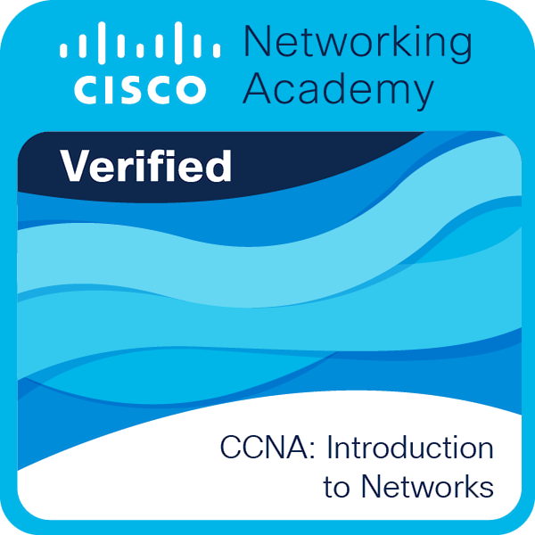

Milestones of Continuous Learning
Credentials represent moments of growth and discipline. They reflect curiosity, commitment to learning, and the desire to constantly expand technical understanding.
Red Hat System Administration I
Foundational training in Linux system administration and open-source operating environments.
Red Hat System Administration II
Advanced Linux administration concepts including system configuration and enterprise-level environments.

Cisco Networking Foundations
Understanding of networking architecture, connectivity, and communication infrastructure.
Data Science Fundamentals
Conceptual introduction to data processing, analysis methods, and data-driven insights.
Cloud Computing Foundations
Exposure to cloud service models, virtualization, and modern infrastructure technologies.
Data Analytics Essentials
Learning principles of analytical thinking and structured interpretation of information.